# library(rio)
library(tidyverse)
# Custom function to get a sense of the data as a dataframe:
my_glimpse <- function(df, nn = 7) {
df <- df %>%
mutate(across(everything(), ~ if_else(is.character(.) & str_detect(., "^\\s*$"), NA, .)))
tibble::tibble(
Variable = names(df),
N_distinct = unname(purrr::map_int(df, dplyr::n_distinct)),
NAs = unname(purrr::map_int(df, ~ sum(is.na(.)))),
Types = unname(purrr::map_chr(df, ~ paste(class(.), collapse = ', '))),
Content = unname(purrr::map_chr(df, ~ {
vals_unique <- unique(.)
n_vals_unique <- length(vals_unique)
if (n_vals_unique == 0)
''
else if (n_vals_unique > nn)
paste(paste0(head(vals_unique, nn), collapse = ', '), ',...')
else
paste(vals_unique, collapse = ', ')
}))
)
}Generalised Linear Models in STAN follow along
1 Purpose
This is a follow-along document reporting my engagement with Coding Club’s Intro to Stan tutorial. Not everything in the tutorial is expected to be replicated here.
The following libraries are used in this tutorial:
2 Learn about Stan
Bayesian modelling like any statistical modelling can require work to design the appropriate model for your research question and then to develop that model so that it meets the assumptions of your data and runs. You can check out the Coding Club tutorial on /tutorials/model-design/index.html, and Bayesian Modelling in MCMCglmm for key background information on model design and Bayesian statistics.
Statistical models can be fit in a variety of packages in R or other statistical languages. But sometimes the perfect model that you can design conceptually is very hard or impossible to implement in a package or programme that restricts the distributions and complexity that you can use. This is when you may want to move to a statistical programming language such as Stan.
Stan is a new-ish language that offers a more comprehensive approach to learning and implementing Bayesian models that can fit complex data structures. A goal of the Stan development team is to make Bayesian modelling more accessible with clear syntax, a better sampler (sampling here refers to drawing samples out of the Bayesian posterior distribution), and integration with many platforms and including R, RStudio, ggplot2, and Shiny.
In this introductory tutorial we’ll go through the iterative process of model building starting with a linear model. In our advanced Stan tutorial we will explore more complex model structures.
First, before building a model you need to define your question and get to know your data. Explore them, plot them, calculate some summary statistics.
Once you have a sense of your data and what question you want to answer with your statistical model, you can begin the iterative process of building a Bayesian model:
Design your model.
Choose priors (Informative? Not? Do you have external data you could turn into a prior?)
Sample the posterior distribution.
Inspect model convergence (traceplots, rhats, and for Stan no divergent transitions - we will go through these later in the tutorial)
Critically assess the model using posterior predictions and checking how they compare to your data!
Repeat…
It’s also good practice to simulate data to make sure your model is doing what you think it’s doing, as a further way to test your model!
3 Data
First, let’s find a dataset where we can fit a simple linear model. The National Snow and Ice Data Center provides loads of public data that you can download and explore. One of the most prominent climate change impacts on planet earth is the decline in annual sea ice extent in the Northern Hemisphere. Let’s explore how sea ice extent is changing over time using a linear model in Stan.
# Adding stringsAsFactors = F means that numeric variables won't be read in as factors/categorical variables
seaice <- read.csv("seaice.csv", stringsAsFactors = F) %>% as_tibble()Let’s have a look at the data:
s_seaice <- my_glimpse(seaice)What research question can we ask with these data? How about the following:
Research Question: Is sea ice extent declining in the Northern Hemisphere over time?
To explore the answer to that question, first we can make a figure.
plot(extent_north ~ year, pch = 20, data = seaice)
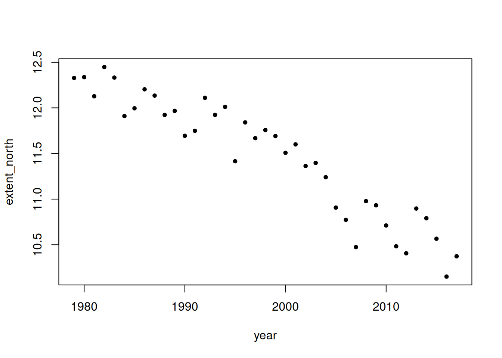
Now, let’s run a general linear model using lm().
lm1 <- lm(extent_north ~ year, data = seaice)
summary(lm1)
Call:
lm(formula = extent_north ~ year, data = seaice)
Residuals:
Min 1Q Median 3Q Max
-0.49925 -0.17713 0.04898 0.16923 0.32829
Coefficients:
Estimate Std. Error t value Pr(>|t|)
(Intercept) 120.503036 6.267203 19.23 <2e-16 ***
year -0.054574 0.003137 -17.40 <2e-16 ***
---
Signif. codes: 0 '***' 0.001 '**' 0.01 '*' 0.05 '.' 0.1 ' ' 1
Residual standard error: 0.2205 on 37 degrees of freedom
Multiple R-squared: 0.8911, Adjusted R-squared: 0.8881
F-statistic: 302.7 on 1 and 37 DF, p-value: < 2.2e-16We can add that model fit to our plot:
plot(extent_north ~ year, pch = 20, data = seaice)
abline(lm1, col = 2, lty = 2, lw = 3)
# abline(lm1, col = 2, lty = 2, lw = 3) adds a line to the plot:
# - 'lm1': Uses the intercept and slope from this linear model object to define the line.
# - 'col = 2': Sets the line color to red (R's default color #2).
# - 'lty = 2': Sets the line type to dotted.
# - 'lw = 3': Sets the line width to 3 (making it thicker).
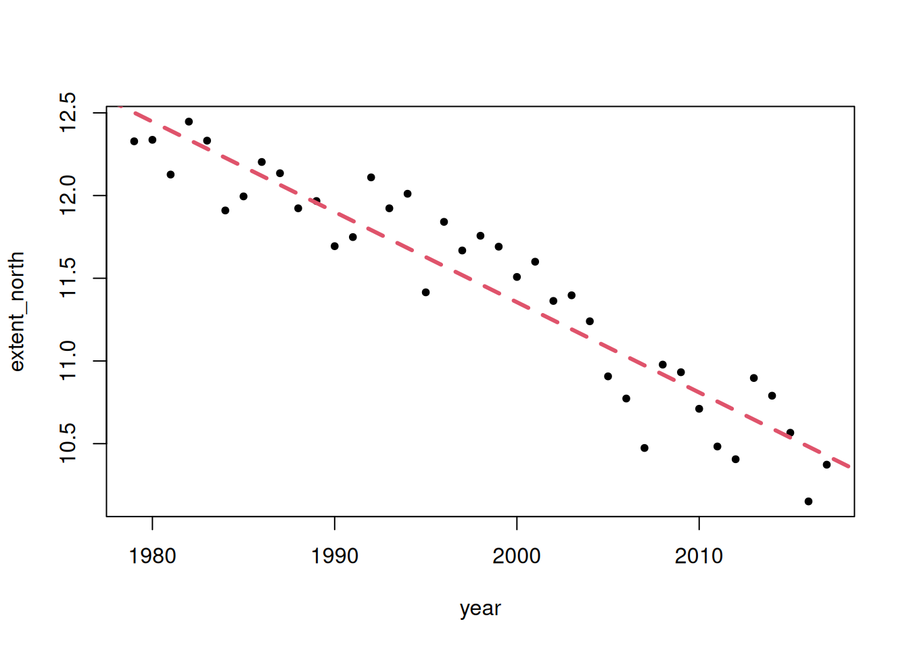
Let’s remember the equation for a linear model:
\(y = \alpha + \beta \cdot x + \text{error}\)
In Stan you need to specify the equation that you are trying to model, so thinking about that model equation is key!
We have the answer to our question perhaps, but the point of this tutorial is to explore using the programming language Stan, so now let’s try writing the same model in Stan.
3.1 Preparing the data
Let’s rename the variables and index the years from 1 to 39. One critical thing about Bayesian models is that you have to describe the variation in your data with informative distributions. Thus, you want to make sure that your data do conform to those distributions and that they will work with your model. In this case, we really want to know is sea ice changing from the start of our dataset to the end of our dataset, not specifically the years 1979 to 2017 which are really far from the year 0. We don’t need our model to estimate what sea ice was like in the year 500, or 600, just over the duration of our dataset. So we set up our year data to index from 1 to 39 years.
x <- I(seaice$year - 1978)
y <- seaice$extent_north
N <- length(seaice$year)We can re-run that linear model with our new data.
lm1 <- lm(y ~ x)
summary(lm1)
Call:
lm(formula = y ~ x)
Residuals:
Min 1Q Median 3Q Max
-0.49925 -0.17713 0.04898 0.16923 0.32829
Coefficients:
Estimate Std. Error t value Pr(>|t|)
(Intercept) 12.555888 0.071985 174.4 <2e-16 ***
x -0.054574 0.003137 -17.4 <2e-16 ***
---
Signif. codes: 0 '***' 0.001 '**' 0.01 '*' 0.05 '.' 0.1 ' ' 1
Residual standard error: 0.2205 on 37 degrees of freedom
Multiple R-squared: 0.8911, Adjusted R-squared: 0.8881
F-statistic: 302.7 on 1 and 37 DF, p-value: < 2.2e-16We can also extract some of the key summary statistics from our simple model, so that we can compare them with the outputs of the Stan models later.
lm_alpha <- summary(lm1)$coeff[1] # the intercept
lm_beta <- summary(lm1)$coeff[2] # the slope
lm_sigma <- sigma(lm1) # the residual errorNow let’s turn that into a dataframe for inputting into a Stan model. Data passed to Stan needs to be a list of named objects. The names given here need to match the variable names used in the models (see the model code below).
stan_data <- list(N = N, x = x, y = y)3.2 Libraries
Please make sure the following libraries are installed (these are the libraries for this and the next Stan tutorial). rstan is the most important, and requires a little extra if you don’t have a C++ compiler.
library(rstan)Loading required package: StanHeaders
rstan version 2.32.7 (Stan version 2.32.2)For execution on a local, multicore CPU with excess RAM we recommend calling
options(mc.cores = parallel::detectCores()).
To avoid recompilation of unchanged Stan programs, we recommend calling
rstan_options(auto_write = TRUE)
For within-chain threading using `reduce_sum()` or `map_rect()` Stan functions,
change `threads_per_chain` option:
rstan_options(threads_per_chain = 1)
Attaching package: 'rstan'The following object is masked from 'package:tidyr':
extractoptions(mc.cores = parallel::detectCores())
rstan_options(auto_write = TRUE)
library(gdata)
Attaching package: 'gdata'The following objects are masked from 'package:dplyr':
combine, first, last, starts_withThe following object is masked from 'package:purrr':
keepThe following object is masked from 'package:tidyr':
starts_withThe following object is masked from 'package:stats':
nobsThe following object is masked from 'package:utils':
object.sizeThe following object is masked from 'package:base':
startsWithlibrary(bayesplot)This is bayesplot version 1.12.0- Online documentation and vignettes at mc-stan.org/bayesplot- bayesplot theme set to bayesplot::theme_default() * Does _not_ affect other ggplot2 plots * See ?bayesplot_theme_set for details on theme setting4 Our first Stan program
We’re going to start by writing a linear model in the language Stan. This can be written in your R script, or saved seprately as a .stan file and called into R.
A Stan program has three required “blocks”:
“data” block: where you declare the data types, their dimensions, any restrictions (i.e. upper = or lower = , which act as checks for
Stan), and their names. Any names you give to yourStanprogram will also be the names used in other blocks.“parameters” block: This is where you indicate the parameters you want to model, their dimensions, restrictions, and name. For a linear regression, we will want to model the intercept, any slopes, and the standard deviation of the errors around the regression line.
“model” block: This is where you include any sampling statements, including the “likelihood” (model) you are using. The model block is where you indicate any prior distributions you want to include for your parameters. If no prior is defined,
Stanuses default priors with the specificationsuniform(-infinity, +infinity). You can restrict priors using upper or lower when declaring the parameters (i.e.lower = 0> to make sure a parameter is positive). You can find more information about prior specification here.
Sampling is indicated by the ~ symbol, and Stan already includes many common distributions as vectorized functions. You can check out the manual for a comprehensive list and more information on the optional blocks you could include in your Stan model.
There are also four optional blocks:
“functions”
“transformed data”
“transformed parameters”
“generated quantities”
Comments are indicated by // in Stan. The write("model code", "file_name") bit allows us to write the Stan model in our R script and output the file to the working directory (or you can set a different file path).
write("// Stan model for simple linear regression
data {
int < lower = 1 > N; // Sample size
vector[N] x; // Predictor
vector[N] y; // Outcome
}
parameters {
real alpha; // Intercept
real beta; // Slope (regression coefficients)
real < lower = 0 > sigma; // Error SD
}
model {
y ~ normal(alpha + x * beta , sigma);
}
generated quantities {
} // The posterior predictive distribution",
"stan_model1.stan")First, we should check our Stan model to make sure we wrote a file.
stanc("stan_model1.stan")$status
[1] TRUE
$model_cppname
[1] "model998242cc8494_stan_model1"
$cppcode
[1] "#ifndef USE_STANC3\n#define USE_STANC3\n#endif\n// Code generated by stanc v2.32.2\n#include <stan/model/model_header.hpp>\nnamespace model998242cc8494_stan_model1_namespace {\nusing stan::model::model_base_crtp;\nusing namespace stan::math;\nstan::math::profile_map profiles__;\nstatic constexpr std::array<const char*, 10> locations_array__ =\n {\" (found before start of program)\",\n \" (in 'stan_model1', line 8, column 1 to column 12)\",\n \" (in 'stan_model1', line 9, column 1 to column 11)\",\n \" (in 'stan_model1', line 10, column 1 to column 26)\",\n \" (in 'stan_model1', line 13, column 1 to column 38)\",\n \" (in 'stan_model1', line 3, column 1 to column 21)\",\n \" (in 'stan_model1', line 4, column 8 to column 9)\",\n \" (in 'stan_model1', line 4, column 1 to column 13)\",\n \" (in 'stan_model1', line 5, column 8 to column 9)\",\n \" (in 'stan_model1', line 5, column 1 to column 13)\"};\nclass model998242cc8494_stan_model1 final : public model_base_crtp<model998242cc8494_stan_model1> {\nprivate:\n int N;\n Eigen::Matrix<double,-1,1> x_data__;\n Eigen::Matrix<double,-1,1> y_data__;\n Eigen::Map<Eigen::Matrix<double,-1,1>> x{nullptr, 0};\n Eigen::Map<Eigen::Matrix<double,-1,1>> y{nullptr, 0};\npublic:\n ~model998242cc8494_stan_model1() {}\n model998242cc8494_stan_model1(stan::io::var_context& context__,\n unsigned int random_seed__ = 0, std::ostream*\n pstream__ = nullptr) : model_base_crtp(0) {\n int current_statement__ = 0;\n using local_scalar_t__ = double;\n boost::ecuyer1988 base_rng__ =\n stan::services::util::create_rng(random_seed__, 0);\n // suppress unused var warning\n (void) base_rng__;\n static constexpr const char* function__ =\n \"model998242cc8494_stan_model1_namespace::model998242cc8494_stan_model1\";\n // suppress unused var warning\n (void) function__;\n local_scalar_t__ DUMMY_VAR__(std::numeric_limits<double>::quiet_NaN());\n // suppress unused var warning\n (void) DUMMY_VAR__;\n try {\n int pos__ = std::numeric_limits<int>::min();\n pos__ = 1;\n current_statement__ = 5;\n context__.validate_dims(\"data initialization\", \"N\", \"int\",\n std::vector<size_t>{});\n N = std::numeric_limits<int>::min();\n current_statement__ = 5;\n N = context__.vals_i(\"N\")[(1 - 1)];\n current_statement__ = 5;\n stan::math::check_greater_or_equal(function__, \"N\", N, 1);\n current_statement__ = 6;\n stan::math::validate_non_negative_index(\"x\", \"N\", N);\n current_statement__ = 7;\n context__.validate_dims(\"data initialization\", \"x\", \"double\",\n std::vector<size_t>{static_cast<size_t>(N)});\n x_data__ = Eigen::Matrix<double,-1,1>::Constant(N,\n std::numeric_limits<double>::quiet_NaN());\n new (&x) Eigen::Map<Eigen::Matrix<double,-1,1>>(x_data__.data(), N);\n {\n std::vector<local_scalar_t__> x_flat__;\n current_statement__ = 7;\n x_flat__ = context__.vals_r(\"x\");\n current_statement__ = 7;\n pos__ = 1;\n current_statement__ = 7;\n for (int sym1__ = 1; sym1__ <= N; ++sym1__) {\n current_statement__ = 7;\n stan::model::assign(x, x_flat__[(pos__ - 1)],\n \"assigning variable x\", stan::model::index_uni(sym1__));\n current_statement__ = 7;\n pos__ = (pos__ + 1);\n }\n }\n current_statement__ = 8;\n stan::math::validate_non_negative_index(\"y\", \"N\", N);\n current_statement__ = 9;\n context__.validate_dims(\"data initialization\", \"y\", \"double\",\n std::vector<size_t>{static_cast<size_t>(N)});\n y_data__ = Eigen::Matrix<double,-1,1>::Constant(N,\n std::numeric_limits<double>::quiet_NaN());\n new (&y) Eigen::Map<Eigen::Matrix<double,-1,1>>(y_data__.data(), N);\n {\n std::vector<local_scalar_t__> y_flat__;\n current_statement__ = 9;\n y_flat__ = context__.vals_r(\"y\");\n current_statement__ = 9;\n pos__ = 1;\n current_statement__ = 9;\n for (int sym1__ = 1; sym1__ <= N; ++sym1__) {\n current_statement__ = 9;\n stan::model::assign(y, y_flat__[(pos__ - 1)],\n \"assigning variable y\", stan::model::index_uni(sym1__));\n current_statement__ = 9;\n pos__ = (pos__ + 1);\n }\n }\n } catch (const std::exception& e) {\n stan::lang::rethrow_located(e, locations_array__[current_statement__]);\n }\n num_params_r__ = 1 + 1 + 1;\n }\n inline std::string model_name() const final {\n return \"model998242cc8494_stan_model1\";\n }\n inline std::vector<std::string> model_compile_info() const noexcept {\n return std::vector<std::string>{\"stanc_version = stanc3 v2.32.2\",\n \"stancflags = --\"};\n }\n template <bool propto__, bool jacobian__, typename VecR, typename VecI,\n stan::require_vector_like_t<VecR>* = nullptr,\n stan::require_vector_like_vt<std::is_integral, VecI>* = nullptr>\n inline stan::scalar_type_t<VecR>\n log_prob_impl(VecR& params_r__, VecI& params_i__, std::ostream*\n pstream__ = nullptr) const {\n using T__ = stan::scalar_type_t<VecR>;\n using local_scalar_t__ = T__;\n T__ lp__(0.0);\n stan::math::accumulator<T__> lp_accum__;\n stan::io::deserializer<local_scalar_t__> in__(params_r__, params_i__);\n int current_statement__ = 0;\n local_scalar_t__ DUMMY_VAR__(std::numeric_limits<double>::quiet_NaN());\n // suppress unused var warning\n (void) DUMMY_VAR__;\n static constexpr const char* function__ =\n \"model998242cc8494_stan_model1_namespace::log_prob\";\n // suppress unused var warning\n (void) function__;\n try {\n local_scalar_t__ alpha = DUMMY_VAR__;\n current_statement__ = 1;\n alpha = in__.template read<local_scalar_t__>();\n local_scalar_t__ beta = DUMMY_VAR__;\n current_statement__ = 2;\n beta = in__.template read<local_scalar_t__>();\n local_scalar_t__ sigma = DUMMY_VAR__;\n current_statement__ = 3;\n sigma = in__.template read_constrain_lb<local_scalar_t__,\n jacobian__>(0, lp__);\n {\n current_statement__ = 4;\n lp_accum__.add(stan::math::normal_lpdf<propto__>(y,\n stan::math::add(alpha, stan::math::multiply(x, beta)),\n sigma));\n }\n } catch (const std::exception& e) {\n stan::lang::rethrow_located(e, locations_array__[current_statement__]);\n }\n lp_accum__.add(lp__);\n return lp_accum__.sum();\n }\n template <typename RNG, typename VecR, typename VecI, typename VecVar,\n stan::require_vector_like_vt<std::is_floating_point,\n VecR>* = nullptr, stan::require_vector_like_vt<std::is_integral,\n VecI>* = nullptr, stan::require_vector_vt<std::is_floating_point,\n VecVar>* = nullptr>\n inline void\n write_array_impl(RNG& base_rng__, VecR& params_r__, VecI& params_i__,\n VecVar& vars__, const bool\n emit_transformed_parameters__ = true, const bool\n emit_generated_quantities__ = true, std::ostream*\n pstream__ = nullptr) const {\n using local_scalar_t__ = double;\n stan::io::deserializer<local_scalar_t__> in__(params_r__, params_i__);\n stan::io::serializer<local_scalar_t__> out__(vars__);\n static constexpr bool propto__ = true;\n // suppress unused var warning\n (void) propto__;\n double lp__ = 0.0;\n // suppress unused var warning\n (void) lp__;\n int current_statement__ = 0;\n stan::math::accumulator<double> lp_accum__;\n local_scalar_t__ DUMMY_VAR__(std::numeric_limits<double>::quiet_NaN());\n // suppress unused var warning\n (void) DUMMY_VAR__;\n constexpr bool jacobian__ = false;\n static constexpr const char* function__ =\n \"model998242cc8494_stan_model1_namespace::write_array\";\n // suppress unused var warning\n (void) function__;\n try {\n double alpha = std::numeric_limits<double>::quiet_NaN();\n current_statement__ = 1;\n alpha = in__.template read<local_scalar_t__>();\n double beta = std::numeric_limits<double>::quiet_NaN();\n current_statement__ = 2;\n beta = in__.template read<local_scalar_t__>();\n double sigma = std::numeric_limits<double>::quiet_NaN();\n current_statement__ = 3;\n sigma = in__.template read_constrain_lb<local_scalar_t__,\n jacobian__>(0, lp__);\n out__.write(alpha);\n out__.write(beta);\n out__.write(sigma);\n if (stan::math::logical_negation(\n (stan::math::primitive_value(emit_transformed_parameters__) ||\n stan::math::primitive_value(emit_generated_quantities__)))) {\n return ;\n }\n if (stan::math::logical_negation(emit_generated_quantities__)) {\n return ;\n }\n } catch (const std::exception& e) {\n stan::lang::rethrow_located(e, locations_array__[current_statement__]);\n }\n }\n template <typename VecVar, typename VecI,\n stan::require_vector_t<VecVar>* = nullptr,\n stan::require_vector_like_vt<std::is_integral, VecI>* = nullptr>\n inline void\n unconstrain_array_impl(const VecVar& params_r__, const VecI& params_i__,\n VecVar& vars__, std::ostream* pstream__ = nullptr) const {\n using local_scalar_t__ = double;\n stan::io::deserializer<local_scalar_t__> in__(params_r__, params_i__);\n stan::io::serializer<local_scalar_t__> out__(vars__);\n int current_statement__ = 0;\n local_scalar_t__ DUMMY_VAR__(std::numeric_limits<double>::quiet_NaN());\n // suppress unused var warning\n (void) DUMMY_VAR__;\n try {\n int pos__ = std::numeric_limits<int>::min();\n pos__ = 1;\n local_scalar_t__ alpha = DUMMY_VAR__;\n current_statement__ = 1;\n alpha = in__.read<local_scalar_t__>();\n out__.write(alpha);\n local_scalar_t__ beta = DUMMY_VAR__;\n current_statement__ = 2;\n beta = in__.read<local_scalar_t__>();\n out__.write(beta);\n local_scalar_t__ sigma = DUMMY_VAR__;\n current_statement__ = 3;\n sigma = in__.read<local_scalar_t__>();\n out__.write_free_lb(0, sigma);\n } catch (const std::exception& e) {\n stan::lang::rethrow_located(e, locations_array__[current_statement__]);\n }\n }\n template <typename VecVar, stan::require_vector_t<VecVar>* = nullptr>\n inline void\n transform_inits_impl(const stan::io::var_context& context__, VecVar&\n vars__, std::ostream* pstream__ = nullptr) const {\n using local_scalar_t__ = double;\n stan::io::serializer<local_scalar_t__> out__(vars__);\n int current_statement__ = 0;\n local_scalar_t__ DUMMY_VAR__(std::numeric_limits<double>::quiet_NaN());\n // suppress unused var warning\n (void) DUMMY_VAR__;\n try {\n current_statement__ = 1;\n context__.validate_dims(\"parameter initialization\", \"alpha\", \"double\",\n std::vector<size_t>{});\n current_statement__ = 2;\n context__.validate_dims(\"parameter initialization\", \"beta\", \"double\",\n std::vector<size_t>{});\n current_statement__ = 3;\n context__.validate_dims(\"parameter initialization\", \"sigma\", \"double\",\n std::vector<size_t>{});\n int pos__ = std::numeric_limits<int>::min();\n pos__ = 1;\n local_scalar_t__ alpha = DUMMY_VAR__;\n current_statement__ = 1;\n alpha = context__.vals_r(\"alpha\")[(1 - 1)];\n out__.write(alpha);\n local_scalar_t__ beta = DUMMY_VAR__;\n current_statement__ = 2;\n beta = context__.vals_r(\"beta\")[(1 - 1)];\n out__.write(beta);\n local_scalar_t__ sigma = DUMMY_VAR__;\n current_statement__ = 3;\n sigma = context__.vals_r(\"sigma\")[(1 - 1)];\n out__.write_free_lb(0, sigma);\n } catch (const std::exception& e) {\n stan::lang::rethrow_located(e, locations_array__[current_statement__]);\n }\n }\n inline void\n get_param_names(std::vector<std::string>& names__, const bool\n emit_transformed_parameters__ = true, const bool\n emit_generated_quantities__ = true) const {\n names__ = std::vector<std::string>{\"alpha\", \"beta\", \"sigma\"};\n if (emit_transformed_parameters__) {}\n if (emit_generated_quantities__) {}\n }\n inline void\n get_dims(std::vector<std::vector<size_t>>& dimss__, const bool\n emit_transformed_parameters__ = true, const bool\n emit_generated_quantities__ = true) const {\n dimss__ = std::vector<std::vector<size_t>>{std::vector<size_t>{},\n std::vector<size_t>{}, std::vector<size_t>{}};\n if (emit_transformed_parameters__) {}\n if (emit_generated_quantities__) {}\n }\n inline void\n constrained_param_names(std::vector<std::string>& param_names__, bool\n emit_transformed_parameters__ = true, bool\n emit_generated_quantities__ = true) const final {\n param_names__.emplace_back(std::string() + \"alpha\");\n param_names__.emplace_back(std::string() + \"beta\");\n param_names__.emplace_back(std::string() + \"sigma\");\n if (emit_transformed_parameters__) {}\n if (emit_generated_quantities__) {}\n }\n inline void\n unconstrained_param_names(std::vector<std::string>& param_names__, bool\n emit_transformed_parameters__ = true, bool\n emit_generated_quantities__ = true) const final {\n param_names__.emplace_back(std::string() + \"alpha\");\n param_names__.emplace_back(std::string() + \"beta\");\n param_names__.emplace_back(std::string() + \"sigma\");\n if (emit_transformed_parameters__) {}\n if (emit_generated_quantities__) {}\n }\n inline std::string get_constrained_sizedtypes() const {\n return std::string(\"[{\\\"name\\\":\\\"alpha\\\",\\\"type\\\":{\\\"name\\\":\\\"real\\\"},\\\"block\\\":\\\"parameters\\\"},{\\\"name\\\":\\\"beta\\\",\\\"type\\\":{\\\"name\\\":\\\"real\\\"},\\\"block\\\":\\\"parameters\\\"},{\\\"name\\\":\\\"sigma\\\",\\\"type\\\":{\\\"name\\\":\\\"real\\\"},\\\"block\\\":\\\"parameters\\\"}]\");\n }\n inline std::string get_unconstrained_sizedtypes() const {\n return std::string(\"[{\\\"name\\\":\\\"alpha\\\",\\\"type\\\":{\\\"name\\\":\\\"real\\\"},\\\"block\\\":\\\"parameters\\\"},{\\\"name\\\":\\\"beta\\\",\\\"type\\\":{\\\"name\\\":\\\"real\\\"},\\\"block\\\":\\\"parameters\\\"},{\\\"name\\\":\\\"sigma\\\",\\\"type\\\":{\\\"name\\\":\\\"real\\\"},\\\"block\\\":\\\"parameters\\\"}]\");\n }\n // Begin method overload boilerplate\n template <typename RNG> inline void\n write_array(RNG& base_rng, Eigen::Matrix<double,-1,1>& params_r,\n Eigen::Matrix<double,-1,1>& vars, const bool\n emit_transformed_parameters = true, const bool\n emit_generated_quantities = true, std::ostream*\n pstream = nullptr) const {\n const size_t num_params__ = ((1 + 1) + 1);\n const size_t num_transformed = emit_transformed_parameters * (0);\n const size_t num_gen_quantities = emit_generated_quantities * (0);\n const size_t num_to_write = num_params__ + num_transformed +\n num_gen_quantities;\n std::vector<int> params_i;\n vars = Eigen::Matrix<double,-1,1>::Constant(num_to_write,\n std::numeric_limits<double>::quiet_NaN());\n write_array_impl(base_rng, params_r, params_i, vars,\n emit_transformed_parameters, emit_generated_quantities, pstream);\n }\n template <typename RNG> inline void\n write_array(RNG& base_rng, std::vector<double>& params_r, std::vector<int>&\n params_i, std::vector<double>& vars, bool\n emit_transformed_parameters = true, bool\n emit_generated_quantities = true, std::ostream*\n pstream = nullptr) const {\n const size_t num_params__ = ((1 + 1) + 1);\n const size_t num_transformed = emit_transformed_parameters * (0);\n const size_t num_gen_quantities = emit_generated_quantities * (0);\n const size_t num_to_write = num_params__ + num_transformed +\n num_gen_quantities;\n vars = std::vector<double>(num_to_write,\n std::numeric_limits<double>::quiet_NaN());\n write_array_impl(base_rng, params_r, params_i, vars,\n emit_transformed_parameters, emit_generated_quantities, pstream);\n }\n template <bool propto__, bool jacobian__, typename T_> inline T_\n log_prob(Eigen::Matrix<T_,-1,1>& params_r, std::ostream* pstream = nullptr) const {\n Eigen::Matrix<int,-1,1> params_i;\n return log_prob_impl<propto__, jacobian__>(params_r, params_i, pstream);\n }\n template <bool propto__, bool jacobian__, typename T_> inline T_\n log_prob(std::vector<T_>& params_r, std::vector<int>& params_i,\n std::ostream* pstream = nullptr) const {\n return log_prob_impl<propto__, jacobian__>(params_r, params_i, pstream);\n }\n inline void\n transform_inits(const stan::io::var_context& context,\n Eigen::Matrix<double,-1,1>& params_r, std::ostream*\n pstream = nullptr) const final {\n std::vector<double> params_r_vec(params_r.size());\n std::vector<int> params_i;\n transform_inits(context, params_i, params_r_vec, pstream);\n params_r = Eigen::Map<Eigen::Matrix<double,-1,1>>(params_r_vec.data(),\n params_r_vec.size());\n }\n inline void\n transform_inits(const stan::io::var_context& context, std::vector<int>&\n params_i, std::vector<double>& vars, std::ostream*\n pstream__ = nullptr) const {\n vars.resize(num_params_r__);\n transform_inits_impl(context, vars, pstream__);\n }\n inline void\n unconstrain_array(const std::vector<double>& params_constrained,\n std::vector<double>& params_unconstrained, std::ostream*\n pstream = nullptr) const {\n const std::vector<int> params_i;\n params_unconstrained = std::vector<double>(num_params_r__,\n std::numeric_limits<double>::quiet_NaN());\n unconstrain_array_impl(params_constrained, params_i,\n params_unconstrained, pstream);\n }\n inline void\n unconstrain_array(const Eigen::Matrix<double,-1,1>& params_constrained,\n Eigen::Matrix<double,-1,1>& params_unconstrained,\n std::ostream* pstream = nullptr) const {\n const std::vector<int> params_i;\n params_unconstrained = Eigen::Matrix<double,-1,1>::Constant(num_params_r__,\n std::numeric_limits<double>::quiet_NaN());\n unconstrain_array_impl(params_constrained, params_i,\n params_unconstrained, pstream);\n }\n};\n}\nusing stan_model = model998242cc8494_stan_model1_namespace::model998242cc8494_stan_model1;\n#ifndef USING_R\n// Boilerplate\nstan::model::model_base&\nnew_model(stan::io::var_context& data_context, unsigned int seed,\n std::ostream* msg_stream) {\n stan_model* m = new stan_model(data_context, seed, msg_stream);\n return *m;\n}\nstan::math::profile_map& get_stan_profile_data() {\n return model998242cc8494_stan_model1_namespace::profiles__;\n}\n#endif"
$model_name
[1] "stan_model1"
$model_code
[1] "// Stan model for simple linear regression\ndata {\n int < lower = 1 > N; // Sample size\n vector[N] x; // Predictor\n vector[N] y; // Outcome\n}\nparameters {\n real alpha; // Intercept\n real beta; // Slope (regression coefficients)\n real < lower = 0 > sigma; // Error SD\n}\nmodel {\n y ~ normal(alpha + x * beta , sigma);\n}\ngenerated quantities {\n} // The posterior predictive distribution"
attr(,"model_name2")
[1] "stan_model1"Now let’s save that file path.
stan_model1 <- "stan_model1.stan"Here we are implicitly using uniform(-infinity, +infinity) priors for our parameters. These are also known as “flat” priors. Weakly informative priors (e.g. normal(0, 10) are more restricted than flat priors. You can find more information about prior specification here.
5 Running our Stan model
Stan programs are complied to C++ before being used. This means that the C++ code needs to be run before R can use the model. For this you must have a C++ compiler installed (see this wiki if you don’t have one already). You can use your model many times per session once you compile it, but you must re-compile when you start a new R session. There are many C++ compilers and they are often different across systems. If your model spits out a bunch of errors (unintelligible junk), don’t worry. As long as your model can be used with the stan() function, it compiled correctly. If we want to use a previously written .stan file, we use the file argument in the stan_model() function.
We fit our model by using the stan() function, and providing it with the model, the data, and indicating the number of iterations for warmup (these iterations won’t be used for the posterior distribution later, as they were just the model “warming up”), the total number of iterations, how many chains we want to run, the number of cores we want to use (Stan is set up for parallelization), which indicates how many chains are run simultaneously (i.e., if you computer has four cores, you can run one chain on each, making for four at the same time), and the thinning, which is how often we want to store our post-warmup iterations. “thin = 1” will keep every iteration, “thin = 2” will keep every second, etc…
Stan automatically uses half of the iterations as warm-up, if the warmup = argument is not specified.
set.seed(123)
fit <- stan(
file = stan_model1,
data = stan_data,
warmup = 500,
iter = 1000,
chains = 4,
thin = 1,
seed = 12345
)recompiling to avoid crashing R sessionTrying to compile a simple C file5.1 Accessing the contents of a stanfit object
Results from stan() are saved as a stanfit object (S4 class). You can find more details in the Stan vignette.
We can get summary statistics for parameter estimates, and sampler diagnostics by executing the name of the object:
fitInference for Stan model: anon_model.
4 chains, each with iter=1000; warmup=500; thin=1;
post-warmup draws per chain=500, total post-warmup draws=2000.
mean se_mean sd 2.5% 25% 50% 75% 97.5% n_eff Rhat
alpha 12.56 0.00 0.08 12.40 12.51 12.55 12.61 12.71 714 1
beta -0.05 0.00 0.00 -0.06 -0.06 -0.05 -0.05 -0.05 778 1
sigma 0.23 0.00 0.03 0.18 0.21 0.23 0.25 0.29 928 1
lp__ 37.36 0.05 1.27 34.03 36.75 37.70 38.31 38.85 668 1
Samples were drawn using NUTS(diag_e) at Wed May 14 22:48:52 2025.
For each parameter, n_eff is a crude measure of effective sample size,
and Rhat is the potential scale reduction factor on split chains (at
convergence, Rhat=1).What does the model output show you? How do you know your model has converged? Can you see that text indicating that your C++ compiler has run?
From this output we can quickly assess model convergence by looking at the Rhat values for each parameter. When these are at or near 1, the chains have converged. There are many other diagnostics, but this is an important one for Stan.
We can also look at the full posterior of our parameters by extracting them from the model object. There are many ways to view the posterior.
posterior <- extract(fit)
str(posterior)List of 4
$ alpha: num [1:2000(1d)] 12.7 12.4 12.5 12.7 12.6 ...
..- attr(*, "dimnames")=List of 1
.. ..$ iterations: NULL
$ beta : num [1:2000(1d)] -0.0605 -0.0486 -0.0523 -0.0577 -0.0548 ...
..- attr(*, "dimnames")=List of 1
.. ..$ iterations: NULL
$ sigma: num [1:2000(1d)] 0.232 0.226 0.228 0.271 0.253 ...
..- attr(*, "dimnames")=List of 1
.. ..$ iterations: NULL
$ lp__ : num [1:2000(1d)] 35.8 37.2 38.6 35.1 38 ...
..- attr(*, "dimnames")=List of 1
.. ..$ iterations: NULLextract() puts the posterior estimates for each parameter into a list.
Let’s compare to our previous estimate with “lm”:
plot(y ~ x, pch = 20)
abline(lm1, col = 2, lty = 2, lw = 3)
abline( mean(posterior$alpha), mean(posterior$beta), col = 6, lw = 2)
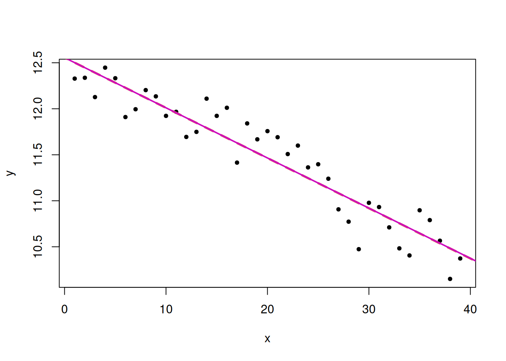
The result is identical to the lm output. This is because we are using a simple model, and have put non-informative priors on our parameters.
One way to visualize the variability in our estimation of the regression line is to plot multiple estimates from the posterior.
plot(y ~ x, pch = 20)
for (i in 1:500) {
abline(posterior$alpha[i], posterior$beta[i], col = "gray", lty = 1)
}
abline(mean(posterior$alpha), mean(posterior$beta), col = 6, lw = 2)
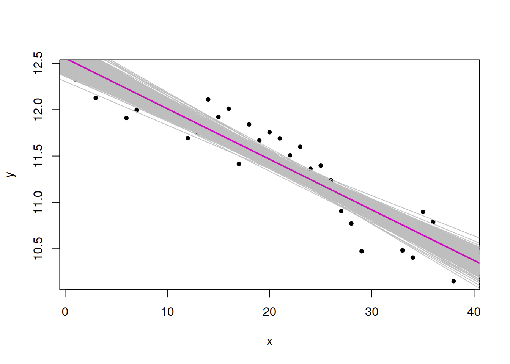
6 Changing our priors
Let’s try again, but now with more informative priors for the relationship between sea ice and time. We’re going to use normal priors with small standard deviations. If we were to use normal priors with very large standard deviations (say 1000, or 10,000), they would act very similarly to uniform priors.
stan_model2 <- "stan_model2.stan"We’ll fit this model and compare it to the mean estimate using the uniform priors.
set.seed(123)
fit2 <- stan(
stan_model2,
data = stan_data,
warmup = 500,
iter = 1000,
chains = 4,
thin = 1
)Warning in readLines(file, warn = TRUE): incomplete final line found on
'/home/edwiny/Local Cloud Copies/OneDrive/Edwin YO/Learning/Coding Club
Github/CodingClubTutorials/CC-Stan-intro-master/stan_model2.stan'posterior2 <- extract(fit2)
plot(y ~ x, pch = 20)
abline(mean(posterior2$alpha), mean(posterior2$beta), col = 3, lw = 2)
abline(mean(posterior$alpha), mean(posterior$beta), col = 36, lw = 3)
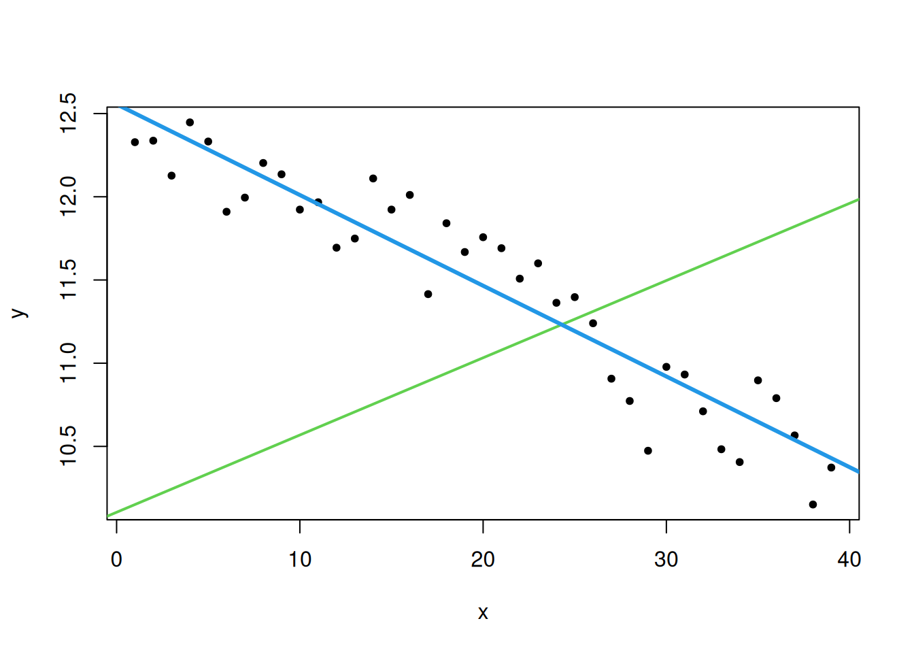
So what happened to the posterior predictions (your modelled relationship)? Does the model fit the data better or not? Why did the model fit change? What did we actually change about our model by making very narrow prior distributions? Try changing the priors to some different numbers yourself and see what happens! This is a common issue in Bayesian modelling, if your prior distributions are very narrow and yet don’t fit your understanding of the system or the distribution of your data, you could run models that do not meaningfully explain variation in your data. However, that isn’t to say that you shouldn’t choose somewhat informative priors, you do want to use previous analyses and understanding of your study system inform your model priors and design. You just need to think carefully about each modelling decision you make!
7 Convergence Diagnostics
Before we go on, we should check again the Rhat values, the effective sample size (n_eff), and the traceplots of our model parameters to make sure the model has converged and is reliable. To find out more about what effective sample sizes and trace plots, you can check out the tutorial on Bayesian statistics using MCMCglmm.
n_eff is a crude measure of the effective sample size. You usually only need to worry is this number is less than 1/100th or 1/1000th of your number of iterations.
Tip
‘Anything over an `n_eff` of 100 is usually “fine”’ - Bob Carpenter
For traceplots, we can view them directly from the posterior:
plot(posterior$alpha, type = "l")
plot(posterior$beta, type = "l")
plot(posterior$sigma, type = "l")
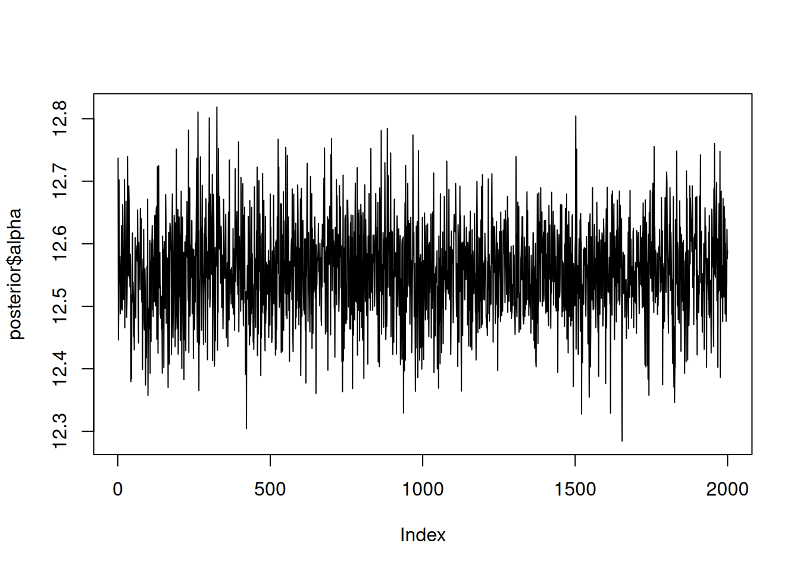
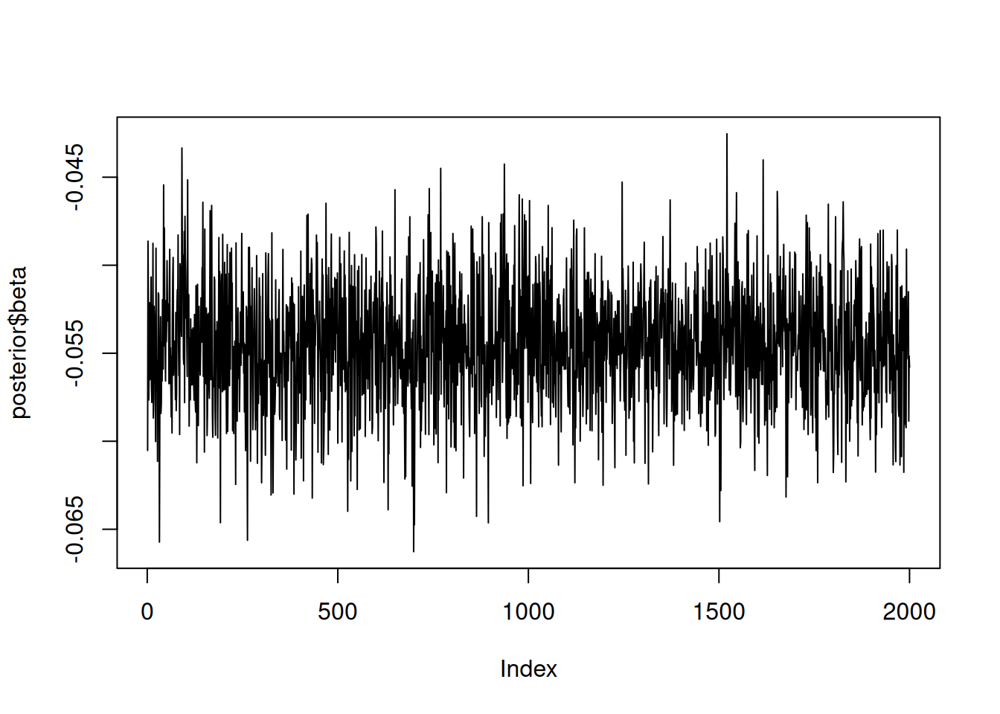
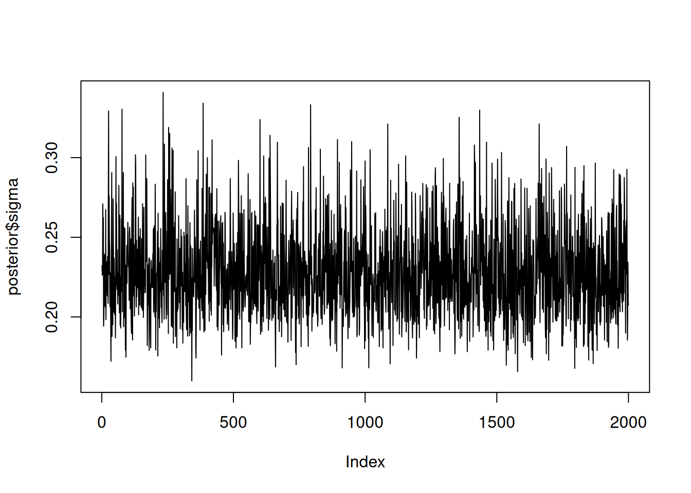
For simpler models, convergence is usually not a problem unless you have a bug in your code, or run your sampler for too few iterations.
7.1 Poor convergence
Try running a model for only 50 iterations and check the trace plots.
set.seed(123)
fit_bad <- stan(
stan_model1,
data = stan_data,
warmup = 25,
iter = 50,
chains = 4,
thin = 1,
seed = 12345,
init = 0
)Warning: There were 11 divergent transitions after warmup. See
https://mc-stan.org/misc/warnings.html#divergent-transitions-after-warmup
to find out why this is a problem and how to eliminate them.Warning: There were 4 chains where the estimated Bayesian Fraction of Missing Information was low. See
https://mc-stan.org/misc/warnings.html#bfmi-lowWarning: Examine the pairs() plot to diagnose sampling problemsWarning: The largest R-hat is 2.33, indicating chains have not mixed.
Running the chains for more iterations may help. See
https://mc-stan.org/misc/warnings.html#r-hatWarning: Bulk Effective Samples Size (ESS) is too low, indicating posterior means and medians may be unreliable.
Running the chains for more iterations may help. See
https://mc-stan.org/misc/warnings.html#bulk-essWarning: Tail Effective Samples Size (ESS) is too low, indicating posterior variances and tail quantiles may be unreliable.
Running the chains for more iterations may help. See
https://mc-stan.org/misc/warnings.html#tail-essposterior_bad <- extract(fit_bad)This also has some “divergent transitions” after warmup, indicating a mis-specified model, or that the sampler that has failed to fully sample the posterior (or both!). Divergent transitions sound like some sort of teen fiction about a future dystopia, but actually it indicates problems with your model.
plot(posterior_bad$alpha, type = "l")
plot(posterior_bad$beta, type = "l")
plot(posterior_bad$sigma, type = "l")
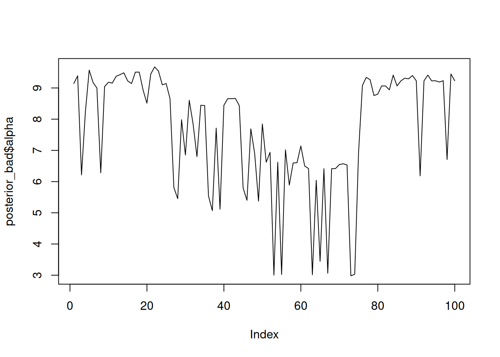
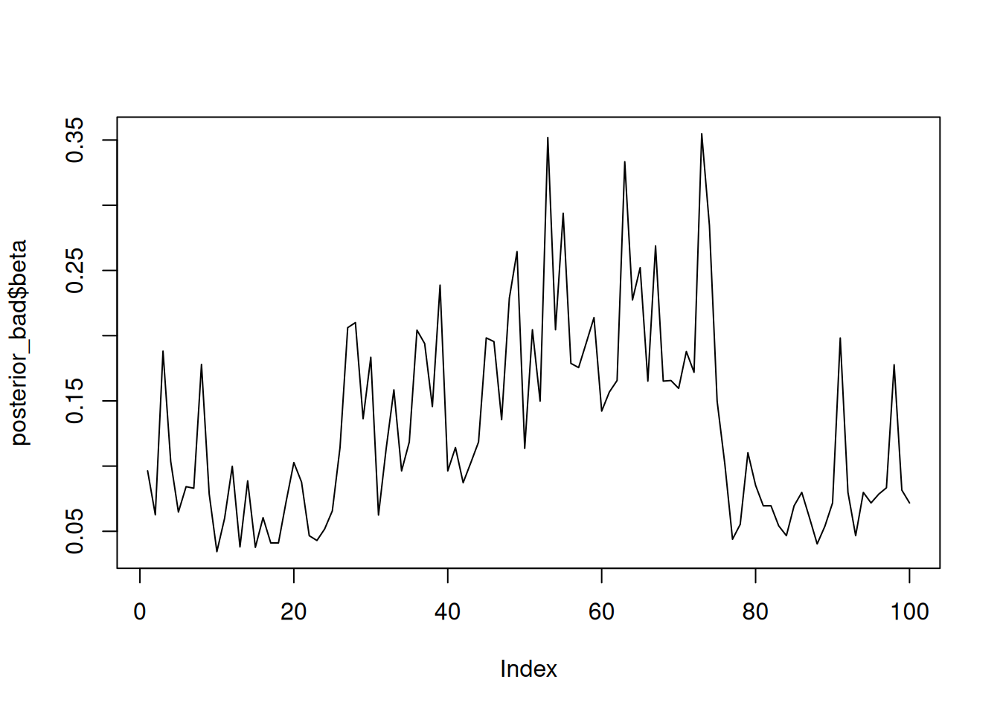
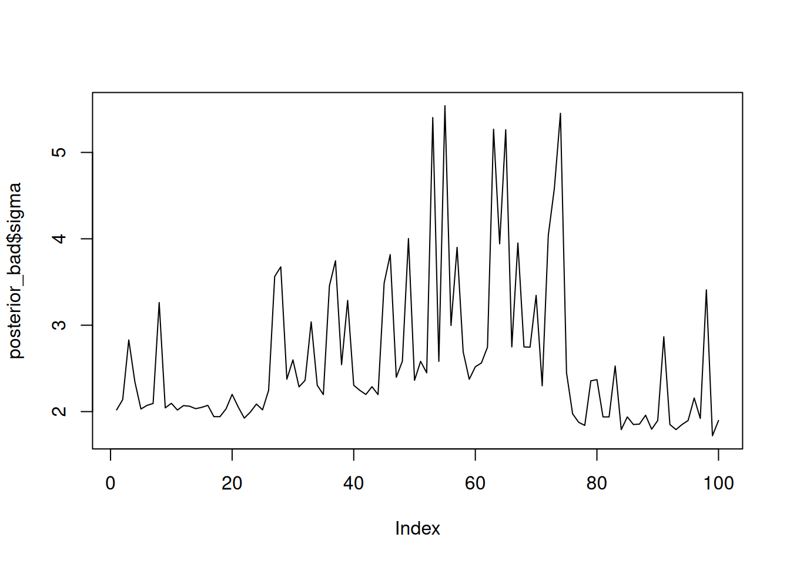
7.2 Parameter summaries
We can also get summaries of the parameters through the posterior directly. Let’s also plot the non-Bayesian linear model values to make sure our model is doing what we think it is…
par(mfrow = c(1,3))
plot(density(posterior$alpha), main = "Alpha")
abline(v = lm_alpha, col = 4, lty = 2)
plot(density(posterior$beta), main = "Beta")
abline(v = lm_beta, col = 4, lty = 2)
plot(density(posterior$sigma), main = "Sigma")
abline(v = lm_sigma, col = 4, lty = 2)
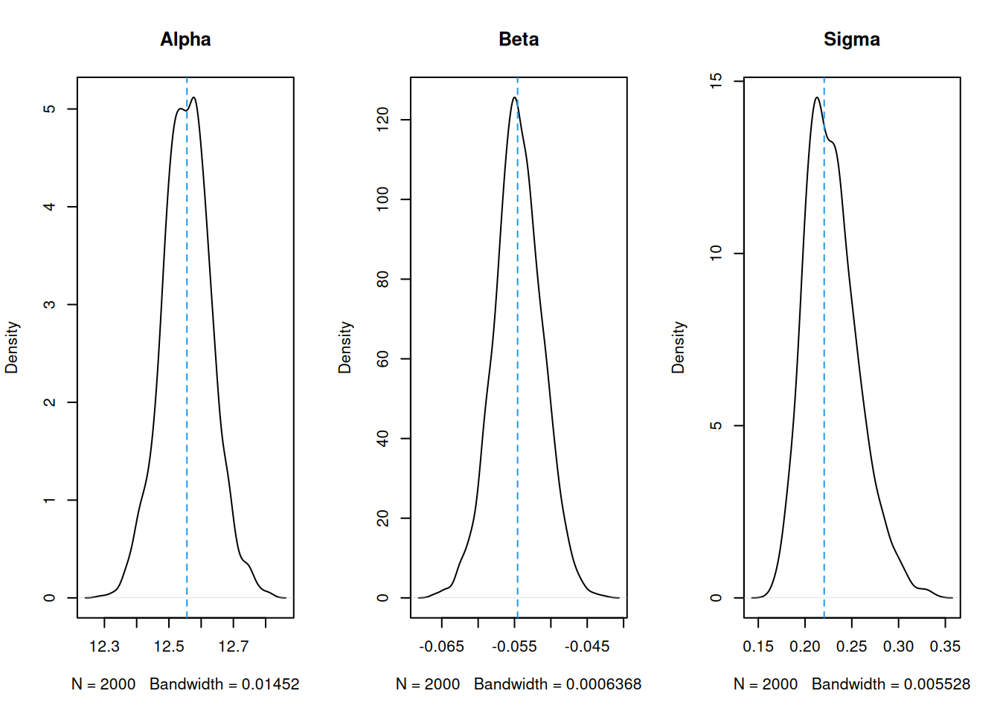
From the posterior we can directly calculate the probability of any parameter being over or under a certain value of interest.
Probablility that beta is >0:
sum(posterior$beta>0)/length(posterior$beta)[1] 0# 0Probability that beta is >0.2:
sum(posterior$beta>0.2)/length(posterior$beta)[1] 0# 07.3 Diagnostic plots in rstan
While we can work with the posterior directly, rstan has a lot of useful functions built-in.
traceplot(fit)
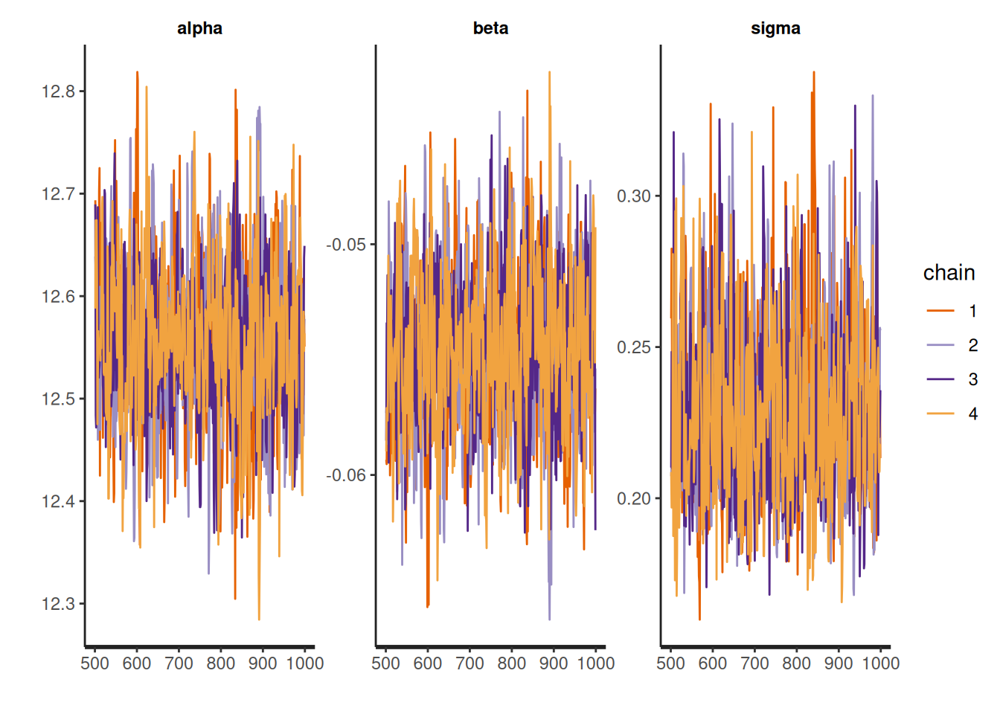
This is a wrapper for the stan_trace() function, which is much better than our previous plot because it allows us to compare the chains.
We can also look at the posterior densities & histograms.
stan_dens(fit)
stan_hist(fit)`stat_bin()` using `bins = 30`. Pick better value with `binwidth`.
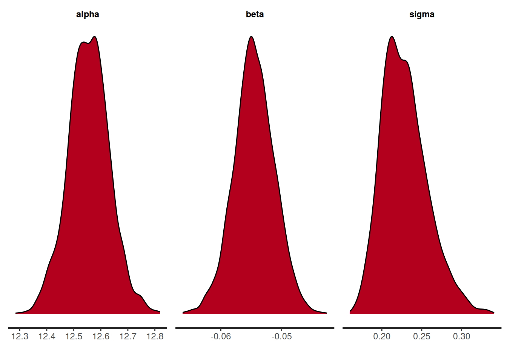
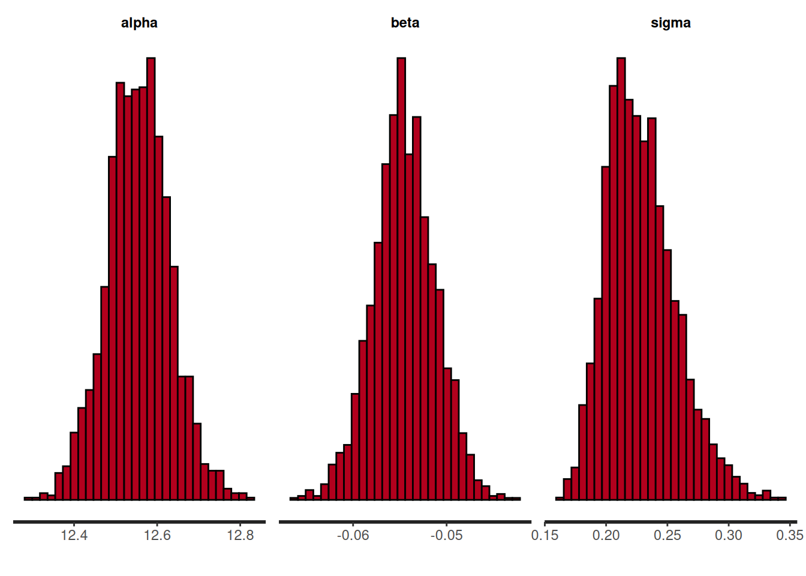
And we can generate plots which indicate the mean parameter estimates and any credible intervals we may be interested in. Note that the 95% credible intervals for the beta and sigma parameters are very small, thus you only see the dots. Depending on the variance in your own data, when you do your own analyses, you might see smaller or larger credible intervals.
plot(fit, show_density = FALSE, ci_level = 0.5, outer_level = 0.95, fill_color = "salmon")ci_level: 0.5 (50% intervals)outer_level: 0.95 (95% intervals)
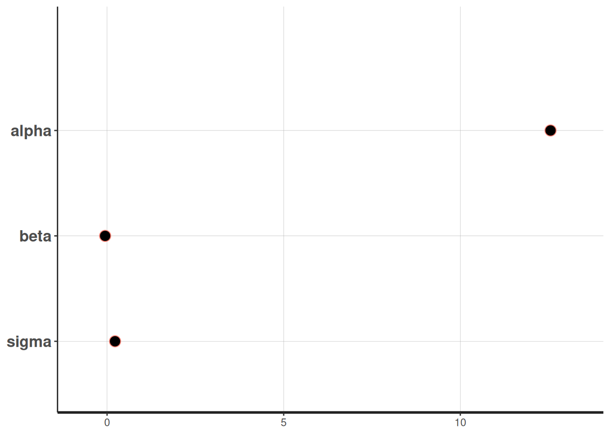
7.4 Posterior Predictive Checks
For prediction and as another form of model diagnostic, Stan can use random number generators to generate predicted values for each data point, at each iteration. This way we can generate predictions that also represent the uncertainties in our model and our data generation process. We generate these using the Generated Quantities block. This block can be used to get any other information we want about the posterior, or make predictions for new data.
write("// Stan model for simple linear regression
data {
int < lower = 1 > N; // Sample size
vector[N] x; // Predictor
vector[N] y; // Outcome
}
parameters {
real alpha; // Intercept
real beta; // Slope (regression coefficients)
real < lower = 0 > sigma; // Error SD
}
model {
y ~ normal(x * beta + alpha, sigma);
}
generated quantities {
real y_rep[N];
for (n in 1:N) {
y_rep[n] = normal_rng(x[n] * beta + alpha, sigma);
}
}",
"stan_model2_GQ.stan")
stan_model2_GQ <- "stan_model2_GQ.stan"Note that vectorization is not supported in the GQ (generated quantities) block, so we have to put it in a loop. But since this is compiled to C++, loops are actually quite fast and Stan only evaluates the GQ block once per iteration, so it won’t add too much time to your sampling. Typically, the data generating functions will be the distributions you used in the model block but with an _rng suffix. (Double-check in the Stan manual to see which sampling statements have corresponding rng functions already coded up.)
set.seed(123)
fit3 <- stan(
stan_model2_GQ,
data = stan_data,
iter = 1000,
chains = 4,
thin = 1,
seed = 12345
)recompiling to avoid crashing R session7.5 Extracting the y_rep values from posterior.
There are many options for dealing with y_rep values.
y_rep <- as.matrix(fit3, pars = "y_rep")
dim(y_rep)[1] 2000 39Each row is an iteration (single posterior estimate) from the model.
We can use the bayesplot package to make some prettier looking plots. This package is a wrapper for many common ggplot2 plots, and has a lot of built-in functions to work with posterior predictions. For details, you can check out the bayesplot vignettes.
Comparing density of y with densities of y over 200 posterior draws.
ppc_dens_overlay(y, y_rep[1:200, ])
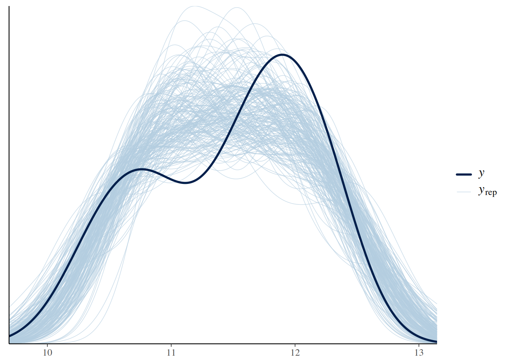
Here we see data (dark blue) fit well with our posterior predictions.
We can also use this to compare estimates of summary statistics.
ppc_stat(y = y, yrep = y_rep, stat = "mean")Note: in most cases the default test statistic 'mean' is too weak to detect anything of interest.`stat_bin()` using `bins = 30`. Pick better value with `binwidth`.
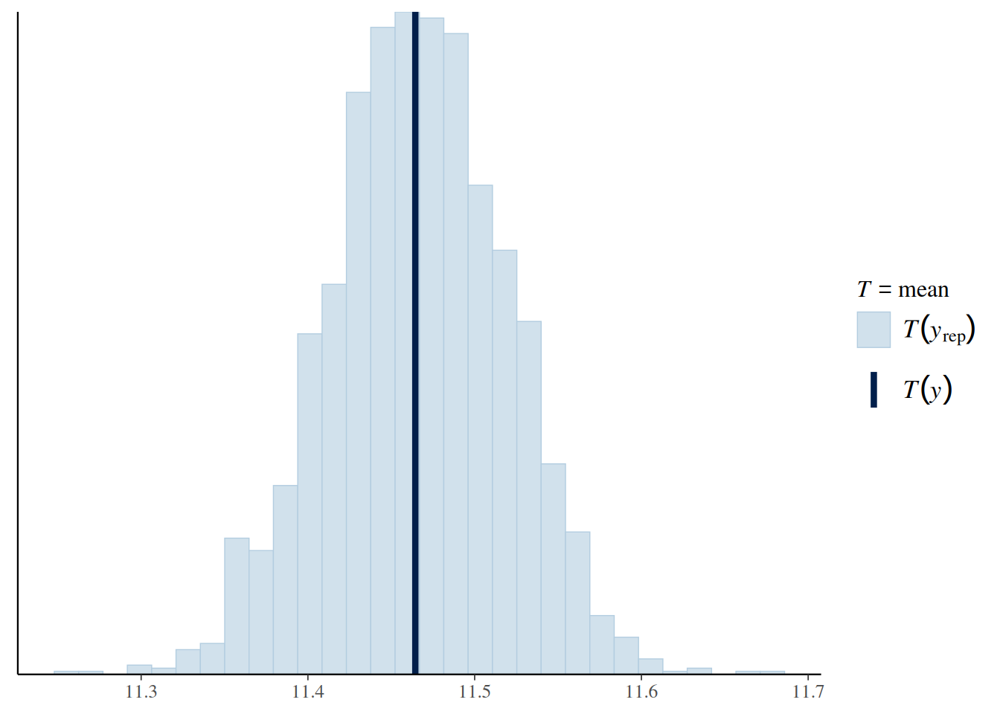
We can change the function passed to the stat function, and even write our own!
We can investigate mean posterior prediction per datapoint vs the observed value for each datapoint (default line is 1:1)
ppc_scatter_avg(y = y, yrep = y_rep)
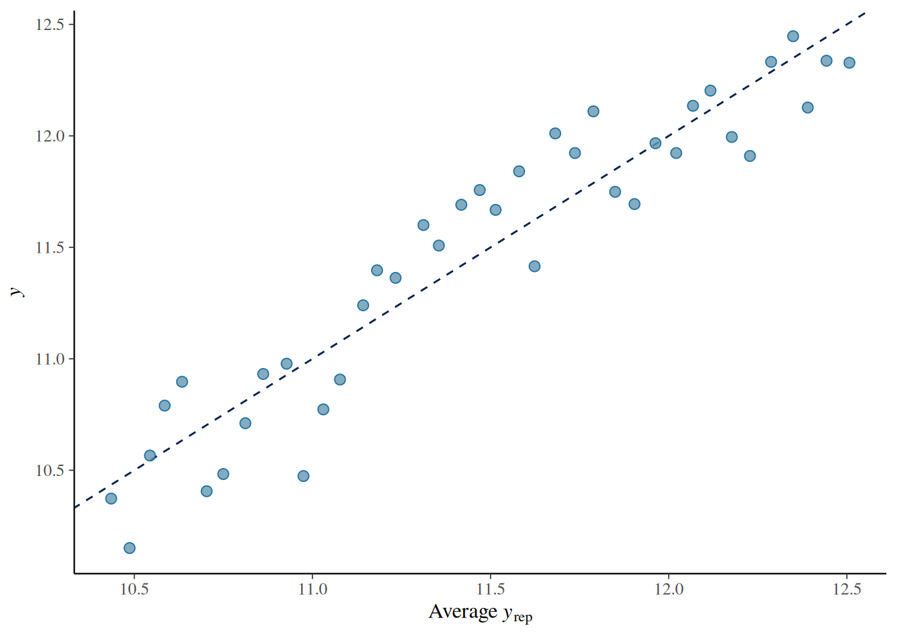
7.6 bayesplot options
Here is a list of currently available plots (bayesplot 1.12.0):
available_ppc()bayesplot PPC module:
ppc_bars
ppc_bars_grouped
ppc_boxplot
ppc_dens
ppc_dens_overlay
ppc_dens_overlay_grouped
ppc_ecdf_overlay
ppc_ecdf_overlay_grouped
ppc_error_binned
ppc_error_hist
ppc_error_hist_grouped
ppc_error_scatter
ppc_error_scatter_avg
ppc_error_scatter_avg_grouped
ppc_error_scatter_avg_vs_x
ppc_freqpoly
ppc_freqpoly_grouped
ppc_hist
ppc_intervals
ppc_intervals_grouped
ppc_km_overlay
ppc_km_overlay_grouped
ppc_loo_intervals
ppc_loo_pit_overlay
ppc_loo_pit_qq
ppc_loo_ribbon
ppc_pit_ecdf
ppc_pit_ecdf_grouped
ppc_ribbon
ppc_ribbon_grouped
ppc_rootogram
ppc_scatter
ppc_scatter_avg
ppc_scatter_avg_grouped
ppc_stat
ppc_stat_2d
ppc_stat_freqpoly
ppc_stat_freqpoly_grouped
ppc_stat_grouped
ppc_violin_groupedYou can change the colour scheme in bayesplot too:
color_scheme_view(c("blue", "gray", "green", "pink", "purple",
"red","teal","yellow"))
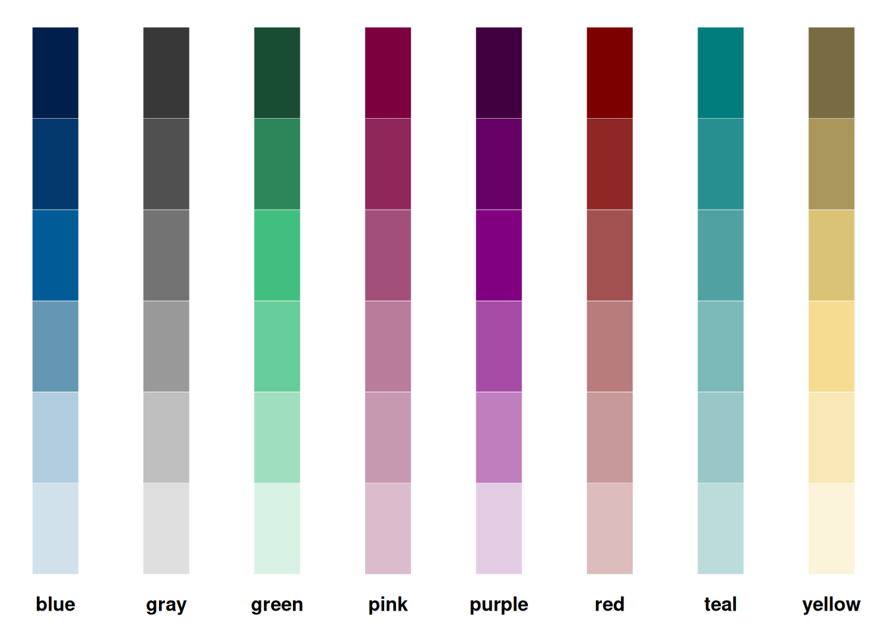
And you can even mix them:
color_scheme_view("mix-blue-red")
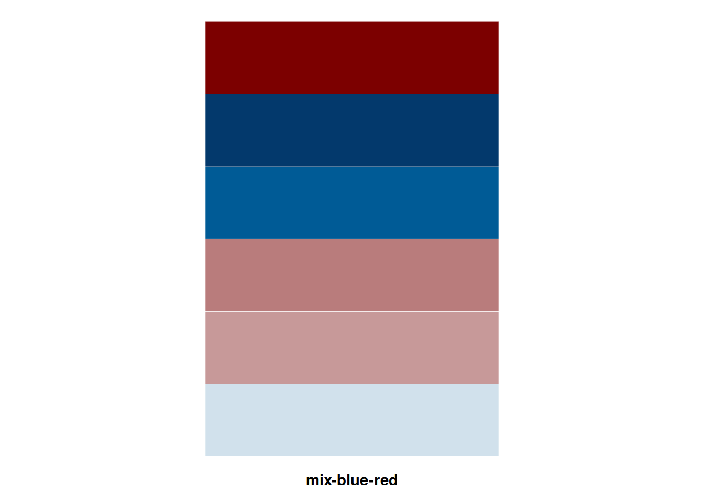
You can set color schemes with:
color_scheme_set("teal")So now you have learned how to run a linear model in Stan and to check the model convergence. But what is the answer to our research question?
Research Question: Is sea ice extent declining in the Northern Hemisphere over time?
What do your Stan model results indicate?
How would you write up these results? What is the key information to report from a Stan model? Effect sizes, credible intervals, sample sizes, what else? Check out some Stan models in the ecological literature to see how those Bayesian models are reported.
Now as an added challenge, can you go back and test a second research question:
Research Question: Is sea ice extent declining in the Southern Hemisphere over time?
Is the same pattern happening in the Antarctic as in the Arctic? Fit a Stan model to find out!
In the next Stan tutorial, we will build on the concept of a simple linear model in Stan to learn about more complex modelling structures including different distributions and random effects. And in a future tutorial, we will introduce the concept of a mixture model where two different distributions are modelled at the same time - a great way to deal with zero inflation in your proportion or count data!
7.7 Additional ways to run Stan models in R
Check out our second Stan tutorial to learn how to fit Stan models using model syntax similar to the style of other common modelling packages like lme4 and MCMCglmm, as well as how to fit generalised linear models using Poisson and negative binomial distributions.
7.8 Stan References
Stan is a run by a small, but dedicated group of developers. If you are new to Stan, you can join the mailing list. It’s a great resource for understanding and diagnosing problems with Stan, and by posting problems you encounter you are helping yourself, and giving back to the community.
This tutorial is based on work by Max Farrell - you can find Max’s original tutorial here which includes an explanation about how Stan works using simulated data, as well as information about model verification and comparison.